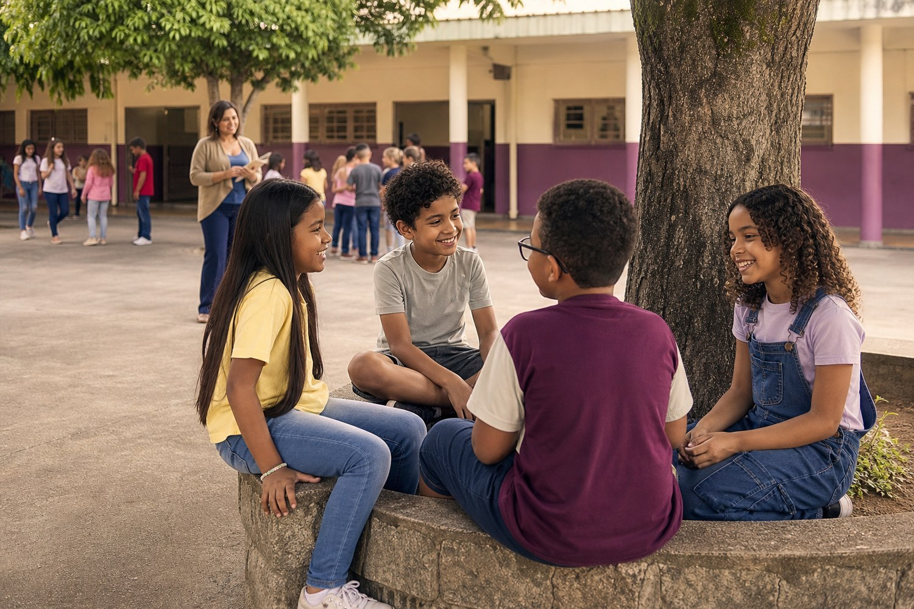

Separe fatos de dúvidas
O primeiro passo propõe distinguir o que você viu do que seu filho relatou. Assim, você identifica o que já sabe e o que precisa perguntar, sem antecipar uma conclusão.
O Mãe da Guarda está sendo preparado para ajudar você a organizar o que percebeu, conversar sem pressionar e decidir como apoiar seu filho. Um roteiro em três passos, com uma trilha flexível de sete dias.
R$ 19,90 · valor previsto para o lançamento

Cada criança tem seu jeito de se aproximar.Talvez seu filho observe a brincadeira sem entrar, conte que ficou de fora de uma atividade ou evite falar do recreio. São situações que merecem escuta, mas que, sozinhas, não explicam o que está acontecendo.
É compreensível ficar em dúvida entre perguntar mais, dar tempo ou conversar com a escola. O roteiro foi pensado para organizar essa conversa, começando pelos fatos e pelo que a criança consegue contar.
Veja os três passosTrês passos para o adulto entender o contexto e escolher como agir. Esta é a estrutura prevista para o produto.
O primeiro passo propõe distinguir o que você viu do que seu filho relatou. Assim, você identifica o que já sabe e o que precisa perguntar, sem antecipar uma conclusão.
O segundo passo propõe escolher um momento tranquilo e uma pergunta aberta. A ideia é dar espaço para a criança contar, inclusive se ela precisar retomar o assunto depois.
O terceiro passo propõe considerar o apoio necessário: acompanhar a situação, conversar com a escola ou buscar ajuda adequada. A decisão parte do contexto, sem uma resposta igual para todos.
A trilha prevista organiza o roteiro em sete dias de pequenas ações. A cada retorno, você retoma o que observou ou conversou para pensar no apoio seguinte. Pode pausar, repetir uma ação e continuar quando fizer sentido.
Os sete dias são uma estrutura flexível de apoio ao responsável. Não são um prazo para mudar a criança, garantir amizades ou resolver bullying. A trilha ainda está em planejamento.
Esse é o escopo planejado para o web app. A versão completa ainda não está disponível. Você pode explorar uma tela conceitual para conhecer a direção do roteiro.
Abrir a tela de exemploNa amostra, escolha uma situação e leia uma orientação inicial. É uma única tela de exemplo, sem cadastro e sem salvar respostas.
Um roteiro educativo para mães e responsáveis que se preocupam com a convivência dos filhos na escola. A proposta reúne três passos e uma trilha flexível de sete dias para apoiar as decisões do adulto.
Formato previsto: web app com roteiro em três passos e trilha de sete dias.
Vendas ainda não abertas. O produto completo não está disponível.Conhecer a amostra gratuitaPara mães e responsáveis preocupados com uma criança que parece ter dificuldade para se aproximar dos colegas, participar das brincadeiras ou encontrar companhia na escola. A faixa etária de uso ainda não foi definida.
Separar observações de dúvidas, preparar uma conversa acolhedora e escolher um apoio adequado ao contexto. O roteiro não oferece diagnóstico, resultado clínico, amizades garantidas ou solução para bullying.
Observar, conversar e combinar apoio são os três passos centrais. A trilha prevista distribui pequenas ações ao longo de sete dias, com liberdade para pausar e retomar. Esse período organiza o uso e não determina quando a situação da criança vai mudar.
O formato planejado é um web app com os três passos e a trilha. O produto completo e as condições de acesso ainda não estão disponíveis. Por enquanto, há somente uma tela conceitual gratuita; ela não representa uma entrega comprada.
Não. A opção escolhida serve apenas para mostrar uma orientação naquela tela. A amostra não pede cadastro, não envia sua escolha e não mantém um histórico das respostas.
Priorize a segurança da criança e busque ajuda da escola e dos profissionais ou serviços locais adequados. Não espere o lançamento ou o fim de uma trilha para pedir ajuda. Este material é educativo.
O canal e as condições de atendimento serão informados antes da abertura das vendas. Não há atendimento conectado a esta página nem acompanhamento individual incluído na proposta atual.
As condições ainda não foram disponibilizadas. Elas deverão estar acessíveis antes de qualquer compra. Neste momento, as vendas estão fechadas e a página não recebe pagamentos.
O Mãe da Guarda está sendo preparado com três passos e uma trilha flexível de sete dias, pelo valor de R$ 19,90. Enquanto as vendas não abrem, explore uma tela de exemplo, sem cadastro.
Explorar a amostra gratuita